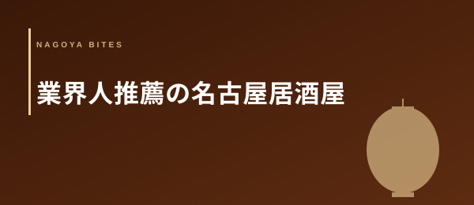

Feature — 業界人コラム
業界人が推薦する名古屋の居酒屋10選
【2026年版・現役飲食人の本音セレクト】
タベログのランキングでもホットペッパーの予約数でも見えない、「業界の中の人が本当に行きたい居酒屋」を10軒だけ選びました。仕入れの構造・席数設計・原価管理——表からは見えない店の実力を、現役の飲食人視点で言語化しています。
Editor's Note — この特集の選定基準
- editor_picks に登録された100店からの抽出
- 現役飲食店経営者の visited / desk リサーチに基づく評価
- 仕入れ・席数・原価管理の3点で「再現性のある運営」と判断できる店
- 広告掲載・タイアップなし（編集独立）
居酒屋という業態は、ジャンルが広いぶん「いい店」の定義が曖昧になりやすい。だからこそ業界の中の人は、料理の見栄えや口コミ件数よりも「仕入れの読み」「席数設計」「原価管理」といった見えない要素で店を評価します。今回は editor_picks に登録された100店から、業界目線で「正しい運営をしている」と判断できる10軒を選びました。
01 — 厳選10軒
「旬の食材」を謳う居酒屋は多いが、メニューの入れ替わり精度と素材説明の解像度が本物。金山エリアで満点評価を維持していることは、地元固定客と一見客の双方を取り込んでいる証拠と判断して掲載した。
業界人ノート: 旬の食材を適正価格で出し続けるには仕入れルートと席数のバランスが必要。小箱で回転を絞り鮮度を担保するのは、飲食業界では「正しい小規模」の手本になる。
📰 掲載歴: ホットペッパーグルメ 居酒屋賞 東海（2024）
「おばんざい（お晩菜）」と炭火焼きを軸に、全国各地の日本酒を取り揃えるキュレーション型の居酒屋。カウンター越しに並ぶ惣菜の見せ方まで計算されており、演出と食の深さが同時に成立している稀なケース。
業界人ノート: おばんざいは仕込み量の読みが難しく、ロスが出やすい業態。それを維持するのは「見せる厨房」としての演出効果と固定客の安定性が担保されているから。
📰 掲載歴: 名古屋ウォーカー 日本酒居酒屋特集（2023）
「大衆価格で職人寿司」は矛盾に見えるが、仕込みの効率化と席数設計によって成立しうる。寿司・刺身・天ぷらを同一厨房で揃えるオペレーション力と原価管理が評価の根拠であり、業界人の目線で見ても再現性が高い。
業界人ノート: 割烹業態で「大衆」を名乗るには価格設定の精度が問われる。原価率を下げずに客単価を抑えるには座席数と回転数の最適化が必要で、それを実現しているのは運営設計の巧みさを示す。
📰 掲載歴: ホットペッパーグルメ 和食賞 東海（2024）
「はかた地どり」という産地鶏ブランドを軸に、炭火焼きという調理法との組み合わせで差別化している。旬の一品も提供するため季節感も担保されており、常連客を作る仕組みが見えた時点で掲載を決めた。
業界人ノート: はかた地どりは一般ブロイラーの3〜4倍の飼育日数を要する高コスト食材。それを炭火焼きというシンプルな調理で出すのは、素材への自信の表れ。加工をかけて誤魔化せない調理法の選択が業界目線での評価ポイント。
📰 掲載歴: 名古屋ウォーカー 地鶏料理特集（2023）
「マグロ専門」を居酒屋の枠内で成立させている業態は、仕入れの一元化によるコスト優位性と調理の専門性を両立できている場合のみ有効。テレビ出演（アゲアゲめし）という外部評価が、メディア実績として掲載の根拠を補強した。
業界人ノート: マグロは部位ごとに原価率が大きく異なる。専門店として名乗るには赤身からトロまで全部位を安定供給できる仕入れルートが不可欠で、それが出来ていない店は結局「マグロも出す居酒屋」になってしまう。
📰 掲載歴: 東海テレビ アゲアゲめし（2024）
「炭火焼き」を居酒屋の主軸に据えることは、通常の焼き台より火の管理に熟練を要し、運営コストも上がる。名古屋駅前という高テナント料立地でそれを維持し4.8評価を獲得しているのは、炭火の香ばしさを重視する固定客がついていることを示す。
業界人ノート: 炭火は遠赤外線効果で食材の水分を逃がさず焼けるが、火加減の均一化が難しく職人依存度が高い。チェーン展開が難しい所以でもあり、単独店舗で維持している店は職人性の高さを表している。
「黒毛和牛とろろ鍋」という看板メニューは、珍しい食材の組み合わせで記憶に残る体験を設計している。全席個室＋厳選日本酒という環境は、接待・特別な食事のシーンを意識した業態設計で、それが4.8評価に反映されている。
業界人ノート: とろろ鍋に和牛を合わせるメニューは、山芋の酵素が肉の食感に影響するため、仕込みと調理タイミングの管理が繊細。それを看板メニューにしている点は、料理人の技術的自信の表れ。
「海鮮×カクテル」という組み合わせは女性客の取り込みに有効な設計で、矢場町エリアの集客に最適化している。カクテルの充実度と海鮮の鮮度を同時に担保するには、酒と食材の仕入れを別ルートで管理する運営力が必要。
業界人ノート: 海鮮居酒屋でカクテルを強化するのは通常珍しい組み合わせだが、女性客の客単価と滞在時間を伸ばす効果がある。仕入れコストが高い海鮮に、利益率の高いカクテルで補う収益構造は合理的。
クラフトビール×日本酒×野菜串という組み合わせは、食と酒の両方にこだわる層を取り込む設計。金山・熱田エリアで4.8評価を維持しているのは、地元固定客のリピートが安定していることを示す。
業界人ノート: クラフトビールを揃えるには樽管理の設備と回転率の確保が必要で、飲食店のビール導入では最もコスト効率が悪いカテゴリ。それを敢えて揃える選択は、客単価よりも客の体験満足度を優先している運営思想を示している。
「神コスパ」を標榜しながら食べログ4.8を維持するのは、価格と品質の両立が本物であることの証明。飲み放題込みの低価格を実現するには、原価管理と仕入れのスケールメリットが機能していることが前提になる。
業界人ノート: 低価格酒場でドリンクを安くするのは原価率を下げることで成立するが、食べ飲み付きで高評価を維持するには料理の質を落とさない工夫が必要。それが出来ているのは仕込みの工数管理と食材選定に工夫があるから。
業界人の視点：居酒屋を「目利き」する3つの軸
1. 仕入れの読み — 旬の食材を語る居酒屋は多いが、メニューの入れ替わり精度と素材説明の解像度を見ると本物かどうかわかる。仕入れルートが安定している店は、季節ごとのメニューが「定型化」せず常に揺れている。
2. 席数と回転率の設計 — 小箱で回転を絞り鮮度を担保する店、大箱でスケールメリットを取る店、業態によって正解が違う。屋号に対して席数が合っていない店は、長続きしない。
3. 原価管理と価格バランス — 「大衆価格」を名乗りながら品質を落とさない店は、仕込みの工数管理と食材選定に必ず工夫がある。安いだけで品質が落ちる店は、3ヶ月で評価が崩れる。